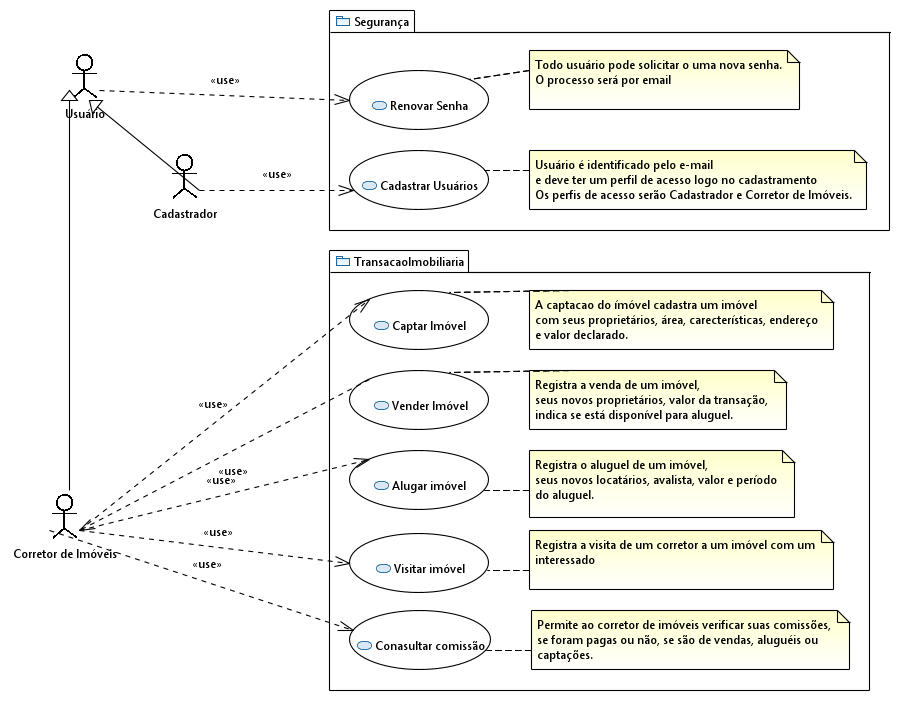
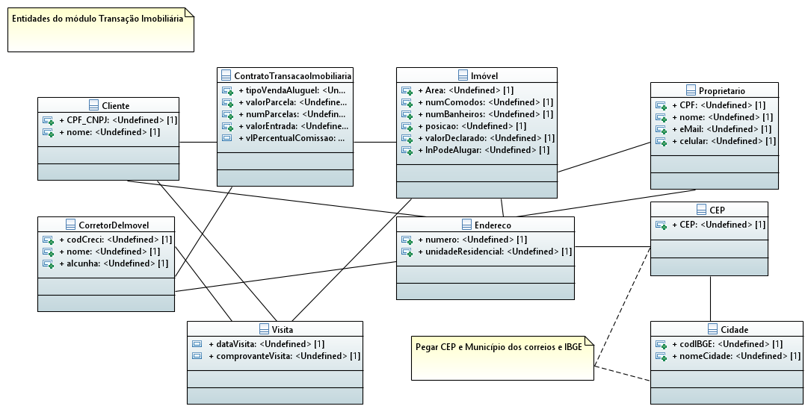
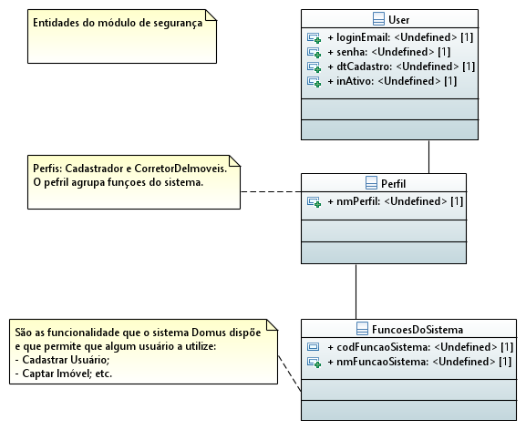
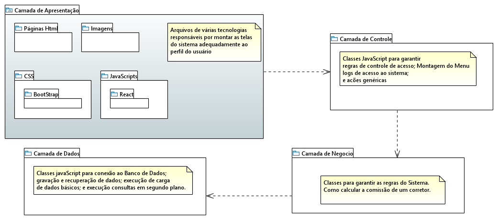

DOMUS |
- Documento de visão do Sistema de auxílio às transações
imobiliárias
|
|
|
|
|
|
|
Objetivo:
Uma ferramenta para facilitar a realização de transações imobiliárias
Caracteristicas:
O sistema DOMUS é focado no corretor de transações imobiliárias, o corretor
de ímóveis. Visando facilitar seu trabalho, agiliza o trabalho da cadeia da
transação em si. Desde a captação de imóveis até o
registro do contratos de venda ou aluguel, passando pelo
cadastramento dos próprios corretores, e também os
proprietário e locatários.
A busca por imóveis no mapa expressa com muito mais clareza onde o
futuro morador residirá e também permite que o corretor de TI, agilmente,
forneça muitas possibilidades de imóveis.
Perfís de usuários do sistema DOMUS e suas funcionalidade
permitidas

Entidades do módulo de transações imobiliárias

Entidades do módulo de segurança

Arquitetura lógica de desenvolvimento
Como o código de cada funcionalidade desenvolvida deve ser distribuído

Protótipo não funcional
Beseado no diagrama de casos de uso das funcionalidades dos módulos de
Segurança e Transação imobiliária